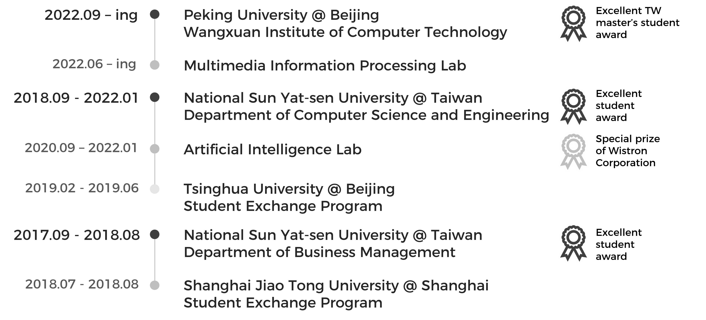
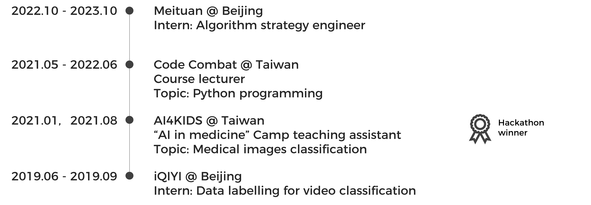

About Me | Hsiao-Yuan, Kinsley, Hsu
I am now a master's student in Wangxuan Institute of Computer Technology at Peking University. My research interests include deep-learning-based presentation layout generation, multimodal video understanding, and 3D action understanding.
目前，我在北京大学王选计算机研究所攻读硕士研究生学位，研究方向主要为基于深度学习的展示布局生成、多模态视频理解、三维动作理解。
Publications & Competitions
- "PosterLayout: A New Benchmark and Approach for Content-aware Visual-Textual Presentation Layout"
in Proceedings of CVPR 2023 [Paper][Project][Source code] - "DensityLayout: Density-conditioned Layout GAN for Visual-textual Presentation Designs"
in Proceedings of ICIG 2023 [Paper] - "Disaster Scene Description & Indexing Challenge" 1st place
in TRECVID 2022 [Paper] - "A Deep Learning-based Integrated Algorithm for Misbehavior Detection System in VANETs"
in Proceedings of ACM ICEA 2021 [Paper]
Education

Experiences
